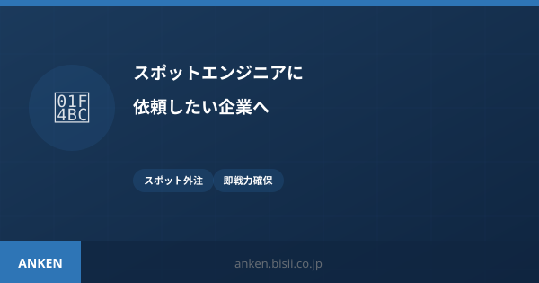

発注者向け｜スポット外注
スポットエンジニアに依頼したい企業へ｜今すぐ即戦力を確保する方法
「週に1回だけ」「このタスクだけ」お願いしたい——でも大手外注は高すぎる。開発リソース不足を低コストで解消する「マイクロ・マッチング」の仕組みと活用法を解説します。固定費ゼロ・タスク単位から依頼できる仕組みと、メガベンチャー出身エンジニアへのアクセス方法を詳しく紹介。
スポットエンジニア 依頼
単発 開発 外注
開発リソース 不足
記事を読む